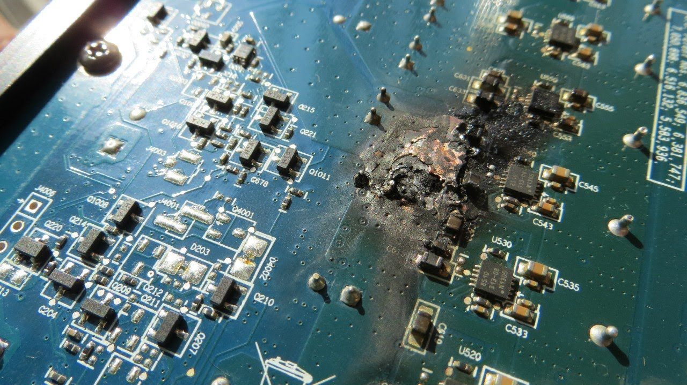
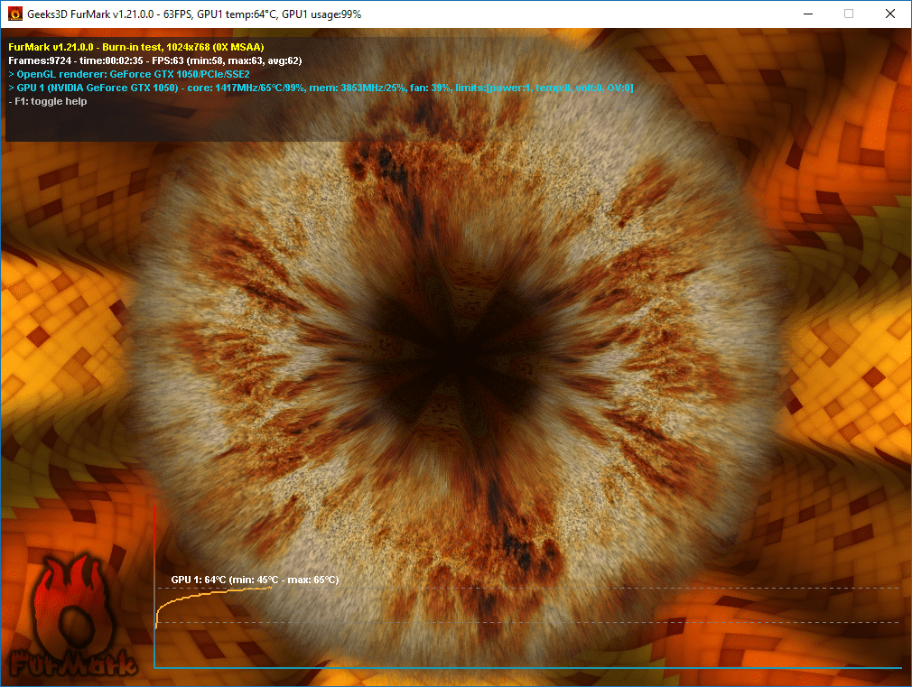
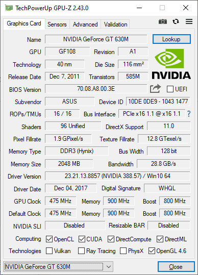

Покупка видеокарт на бу рынке
Сейчас я расскажу как правильно проверять видеокарты перед покупкой на бу рынке
Aliexpress
Если вы собираетесь покупать видеокарту на Aliexpress то должны понимать, что это достаточно рискованное предприятие, ведь ты не сможешь осмотреть или потрогать видеокарту пока она к тебе не доставится, но на этот случай есть добросовестные китайцы которые ставят гарантии на свой товар, но обычно на небольшой срок, чтобы было время проверить запуститься ли она вообще.
Для начала когда вы принесете посылку домой перед вскрытием вы можете начать видеосъемку, если вдруг будет видимый глазу брак и чтобы потом хитрый китаец не захотел возваращать за нее деньги, также проверить саму плату на наличие некачественной пайки или гари.
Вы проверили видеокарту и на ней нет видимых браков, это уже хорошо, дальше мы внедряем видеокарту в компьютер, устанавливаем драйвера на нее в зависимости от разработчика (Nvidia, AMD), после установки желательно перезагурзить компьютер и наконец мы можем начать проверку видеокарты на наличии прочих проблем, видеокарту лучшее всего проверять в программе FurMark или в простонародии "Бублик"
Выставляем предварительно разрешение, которое мы будем зачастую использовать и запускаем проверку, ждем 15-20 минут, желательно 30, чтобы наверняка, смотрим на график температуры, который нам будет показывать насколько сильно поднималась температура в нагрузке, температура должна быть в районе 70-75 градусов это вполне себе стандартная температура видеокарт в нагрузке если же температура в районе 75-85 градусов, то скорее всего китаец нанес плохую термопасту на ваш чип, либо же не менялась и вовсе, советую сразу же присмотреть хорошую термопасту и заменить ее, если же ваша температура работает под 90+ градусов, то скорее всего это уже технические проблемы видеокарты, при такой температуре видеочип начинает дерградировать и в худшем случае она у вас сгорит и все же попробуйте сначала поменять термопасту, если ничего не изменится то пишите продавцу с претензией на этот товар и если китаец попался добросовестный то скорее всего он вернет вам ваши деньги, а видеокарту придется отослать обратно в редких случаях она может остаться у вас.
Также можно проверить видеокарту на оригинальность через программу GPU-Z, она покажет поробные характеристики вашей видеокарты и вы может сверить их с оригинальной, но может быть и такое, что видеокарты перепрошивают и название с характеристиками совпадают с оригинальными, в этом случае стоит опираться на тесты видеокарты в бенчмарке и можно уже будет сравнить ее с оригинальной по производительности.

Вот мы и разобрались как правильно проверять видеокарту перед их полноправной эксплуатации
Avito